Message
One short line on every rung
Nothing in the Aster message is long. Each rung is a short imperative the reader finishes for themselves, and anything that needs a second clause goes in a subtitle.
- Brand line
- Go. Live.
- Descriptor
- Any ride or run, live on the map.
- Proposition
- Aster makes any ride or run watchable live.
- Feeling
- Connected. Proud.
The event
Everyone Live
Enter an event and the whole field goes live from the phones in their pockets. No tracker to carry, nothing to hire.
The club
Clubs made easy
Build the ride in minutes and one link gets the whole club in, live on one map.
Sharing
Share it all
Send one link and your people are with you the whole way.
One house, several rooms
The same structure is cut for clubs, teams, event organisers and brand partners, and again for cycling and for running. The fixed names never translate, so Go. Live., Go Live, Just Ride, Race, Time Trial, Meet-up, Milestone, Club and Alert read the same in English, Spanish, Italian and German.
Mark
A four-petal pinwheel
The Aster mark is a pinwheel of four petals drawn from twelve segments. It is always one colour, chosen for the surface it sits on.
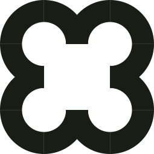
Dark on lime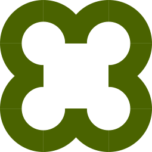
Deep lime on white
White on dark- One colour only
- No gradient
- No outline
- Never rotated
- Never stretched
Colour
Lime, on dark or stone
Lime is the signal. It sits on dark or stone, with dark text on top of it, because white text on lime fails contrast. No new colours are introduced.
#C7F542Primary buttons, live status, highlights.#4A6300Lime for text on white, and the button shadow.#EFFBC4Chips and soft callouts.#181E15Text, borders, headers and dark surfaces.#DCEEEBText on dark.#EDF8F5Hint cards on white.#75D6C8A rare accent, used sparingly.#F0F4F4The page outside the app, and alternate sections.Categories on the map
Type
Barlow, and Barlow Condensed
Shape
Hard edges, hard shadows
Cards and buttons carry a two-pixel dark border, rounded corners and a sharp offset shadow with no blur. Pressing a button moves it into the page and the shadow goes.
Pop 1
3px offset. Light cards.
Pop 2
4px offset. The standard card.
Pop 3
6px offset. Heavy emphasis.
Voice
Clear, warm, and it doesn't shout
Aster sounds like a clear-thinking person who rides or runs and knows the product. Warm, observant, and now and then a little cheeky.
Say what happens
Plain, literal product language. If someone can watch an activity live, say that.
Keep the athlete human
The Sunday rider, the first half-marathon, the friend checking the route. Not everyone races.
Earn the emotion
Proud works beside a specific effort or person. It fails as a slogan on generic grit.
Dry cheek, lightly
One light turn is enough, and never at the athlete's expense.
Be precise about limits
Visibility is not safety. Saying exactly what the product does builds more trust than enthusiasm.
Vocabulary
The smallest true verb
Copy uses the words on the screen and the plainest verb for the action.
| Say | Because |
|---|---|
| Athlete, then rider or runner | It covers everyone who goes out, well beyond racing. |
| Go live, watch live, share the link | They describe what actually happens. |
| Watch, not track | Track can read as surveillance. |
| Alert | The name on the button, used everywhere. |
| Just Ride | The name for an activity with no event. |
| Aster | The one product name in public copy. |
In use
On the stores and on the web
The App Store listing, and the live map as a watcher sees it in a browser.
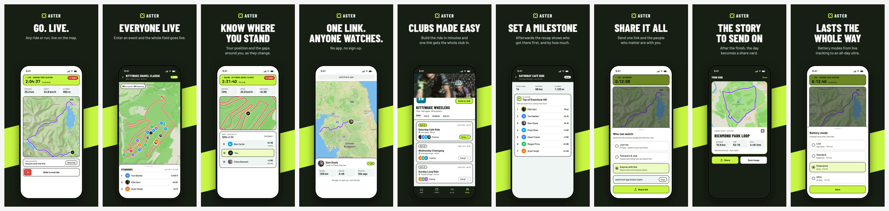
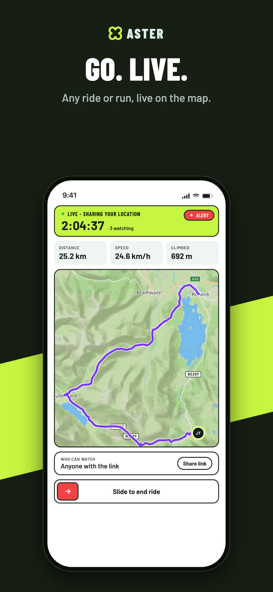
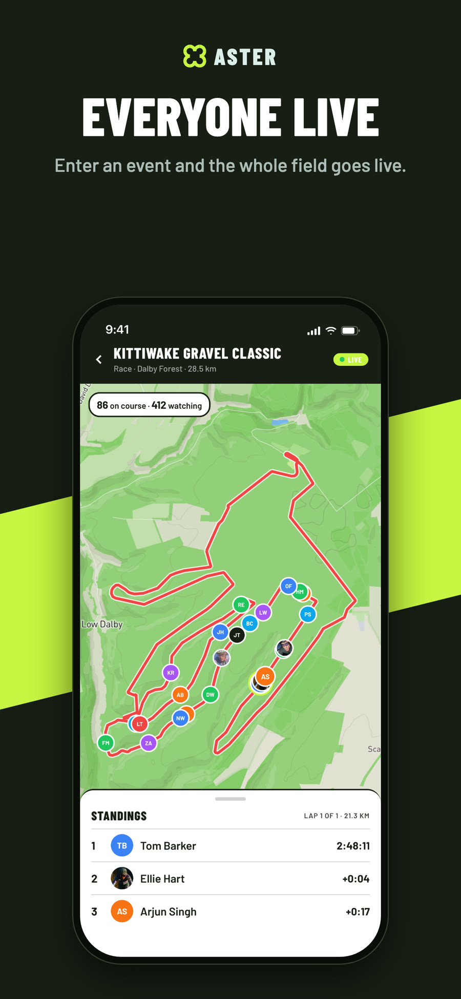
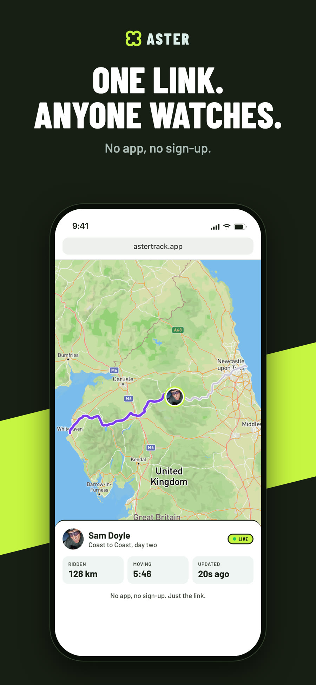
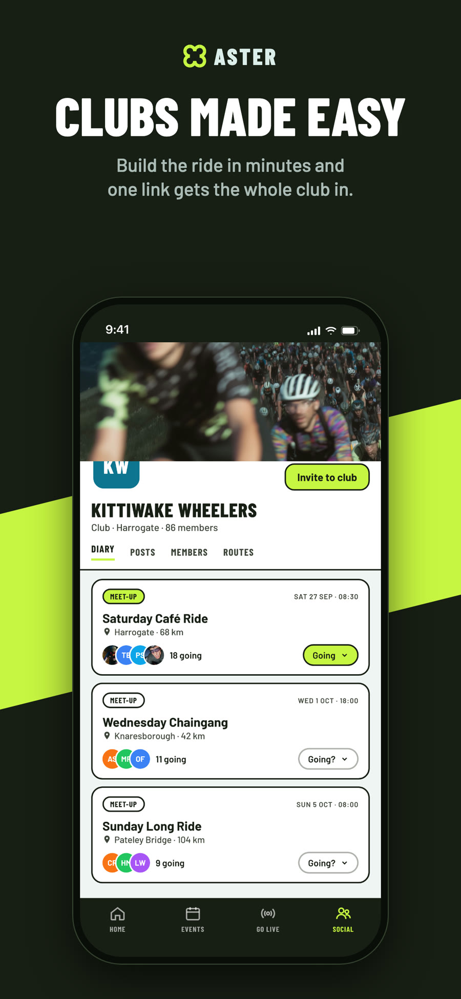
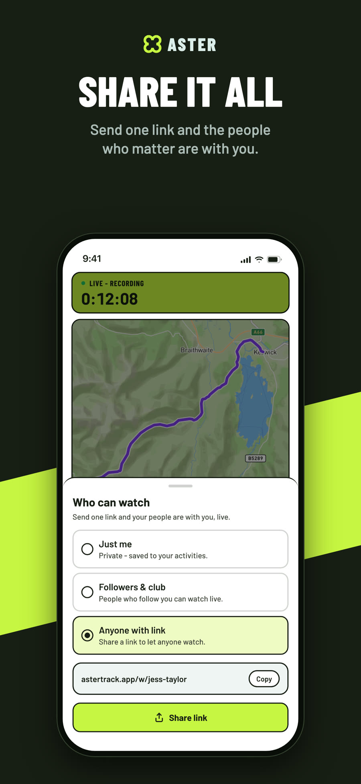
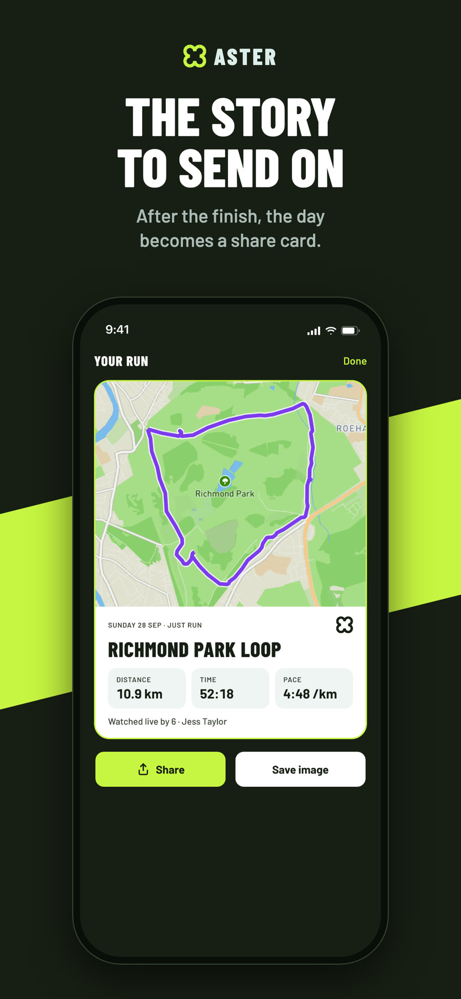
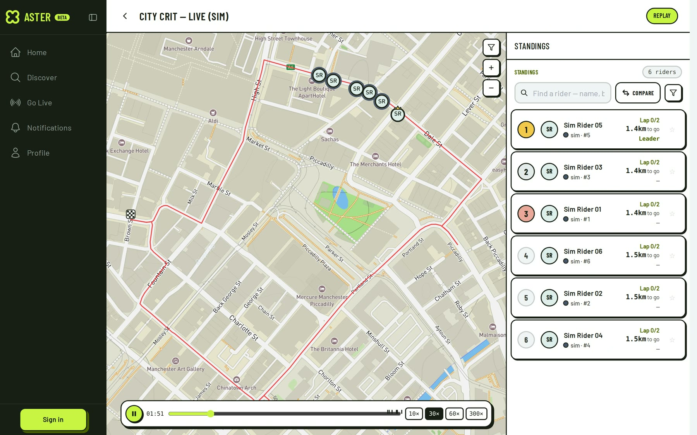